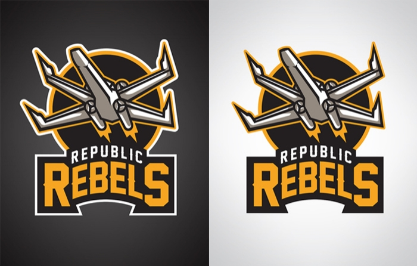

Spire
Spire.io was a PaaS startup that provided RESTful APIs to developers to reduce the amount of time and effort it takes to get an app off the ground. We were able to roll out a real time messaging service and user management service before being shuttered in early 2013.
It looks like the investors are getting things going again. Unfortunately for me, the original Spire site was taken down and recently replaced by a new placeholder page, so I don't have much to show from my time there. However, you can see libraries we released on GitHub and read some of the press from our launch to get a sense of the product.
I was responsible for content strategy, copy, and the site's information architecture. This was my first experience writing a style guide and establishing an editorial calendar for a team. I worked with our engineers to brainstorm post ideas, went through customer support email, and researched competitor blogs and forums related to our services to uncover topics that our customers would be interested in, assigned posts to engineers, and served as an editor.